Controlling Jobs¶
Overview¶
The Jobs panel allows jobs to be controlled and modified using the right-click menu. In addition, the Task panel allows specific tasks to be controlled using the right-click menu.
Note that the visibility of these options can vary depending on the context in which they are used and the filters applied for the current User.
If the Job or Task panels are not visible, see the Panel Features documentation for instructions on how to create new panels in the Monitor.
Job States¶
The state of jobs can be changed using the Job panel’s right-click menu. In addition, the states of specific tasks can be changed using the Task panel’s right-click menu.
Note that it is possible to modify the states of multiple jobs or tasks at the same time, although certain options will only effect the selected jobs that are in the appropriate state. (Example: resume failed jobs will only appear as an option if at least one failed job is selected and will only be applied to the selected jobs that are in the failed state.)


When suspending a job, a confirmation message will appear that gives you the option to suspend the tasks for the job that are currently rendering. If you disable this option, any tasks that are currently rendering will be allowed to complete.
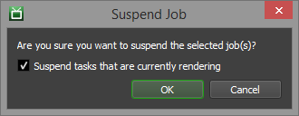These are the states that a job can be in. They are colour coded to make it clear which state the job is in.
Queued (white): No tasks for the job are currently being rendered.
Rendering (green): At least one task for the job is being rendered.
Completed (blue): All tasks for the job have finished rendering.
Suspended (gray): The job will not be rendered until it is resumed.
Pending (orange): The job is waiting on dependencies to finish, or is scheduled to start at a later time.
Failed (red): The job has failed due to errors. It must be resumed before it can be rendered again.
You may notice Queued or Rendering jobs turn slightly red or brown as they sit in the farm. This is an indication that the job is reporting errors. See the Job Reports section further down for more information.
The Job panel’s right-click menu also gives the option to delete or archive jobs. Both options will remove the jobs from the farm, but archived jobs can be imported again for later use.
You can import archived jobs from the File menu in the Monitor. See the Archiving Jobs documentation for more information.
Resubmitting Jobs¶
If you want to render a specific job again, but you don’t want to lose the statistics for original job, you can resubmit it from the Job panel’s right-click menu. This will bring up a window allowing you to adjust the job name, frame list, and frames per task if you want to. All other job properties will remain identical.
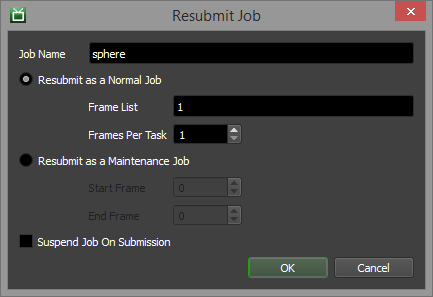Note that you can resubmit the job as a normal or maintenance job.
Maintenance jobs are special jobs where each task for the job will render the same frame(s) on a different machine in your farm. This is useful for performing benchmark tests on your machines. When a maintenance job is submitted, a task will automatically be created for each Worker, and once a Worker has finished a task, it will no longer pick up the job.
It’s even possible to resubmit specific tasks as a new job, which can be done from the Task panel’s right-click menu.
Note a Maintenance job can only be resubmitted from the Job panel.
Note that Tile jobs will have their own resubmission dialogue, and only the Tile frame can be changed.
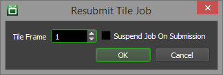Job Properties¶
To modify job properties, select the Modify Job Properties option from the Job panel’s right-click menu. Double-clicking on a job will also bring up the Job Properties window.
Note it is possible to modify the properties of multiple jobs at the same time.
General¶
These are the most common job properties, and most of these were specified when the job was originally submitted.

The properties are as follows:
Job ID: The internal ID of the job.
Job Name: The name of the job.
Comment: The comment for the job.
Department: The department the job was submitted from.
Batch Name: The batch the job belongs to. Jobs with the same Batch Name are grouped together in the Monitor.
User: The user who submitted the job.
Pool: The pool that the job belongs to.
Secondary Pool: If enabled, the job can fall back to the secondary pool, if there are machines available in that pool.
Group: The group that the job belongs to.
Priority: The priority of the job (0 = lowest, 100 = highest).
Concurrent Tasks: The number of tasks a Worker can dequeue at a time (1-16). Note that not all plugins support this feature, such as Digital Fusion.
Limit Tasks To Worker’s Task Limit: If checked, a Worker will not dequeue more tasks than it is allowed to based on its settings.
On Job Complete: When a job completes, you can auto-archive or auto-delete it. You can also choose to do nothing when the job completes.
Re-synchronize Auxiliary Files Between Tasks: If checked, all job files will be synchronized by the Worker between tasks for this job. This can add significant network overhead, and should only be used if you are manually editing any of the files that were submitted with the job.
Reload Plugin Between Tasks: If checked, the Worker reloads all the plugin files between tasks for the same job.
Enforce Sequential Rendering: Sequential rendering forces a Worker to render the tasks of a job in order. If an earlier task is ever requeued, the Worker won’t go back to that task until it has finished the remaining tasks in order. Sequential rendering also forces the Worker to finish rendering tasks in order before switching to another job, even if that job has higher priority or this job is interruptible.
Suppress Event Plugins: If enabled, this job will not trigger any event plugins while in the queue.
Job Is Uneditable: If enabled, delete and archive actions in the Monitor are only shown to the Deadline User associated with or configured to manage the respective job.
Note
Prior to Deadline 10.3.1, “Uneditable” jobs were referred to as “Protected”.
Timeouts¶
These properties affect how a job will timeout. It is important to note that the Auto Task Timeout feature is based on the Auto Job Timeout Settings in the Repository Options. The timeout is based on the render times of the tasks that have already finished for this job, so this option should only be used if the frames for the job have consistent render times.
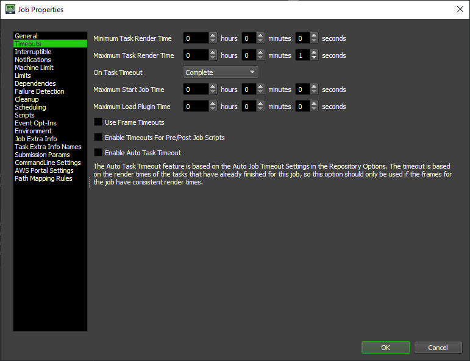The properties are as follows:
Minimum Task Render Time: The minimum amount of time a Worker has to render a task. If a task finishes faster, an error will be reported.
Maximum Task Render Time: The maximum amount of time a Worker has to render a task. If a Maximum Start Job Time is set, the Maximum Task Render Time will not be applied to the Starting phase of a job.
On Task Timeout: When the task rendering times out, you have the option to have the job report an error, fail the task, requeue, complete or notify you when a timeout is reached. For error, fail and requeue you can also choose to be notified as an additional action.
Maximum Start Job Time: The maximum amount of time a Worker has to start a job.
Maximum Load Plugin Time: The maximum amount of time a Worker will spend trying to load the plugin for a job.
Enable Timeouts For Pre/Post Job Scripts: If checked, then the timeouts for this job will also affect its pre/post job scripts, if any are defined.
Use Frame Timeouts: If enabled, timeouts will be calculated based on frames instead of by tasks. The timeouts entered for tasks will be used for each frame in that task.
Enable Auto Task Timeout: If the job should automatically timeout based on parameters specified in the Repository Options.
Interruptible¶
These properties determine whether or not tasks for this job can be interrupted while they are in progress, and under what conditions they be interrupted.
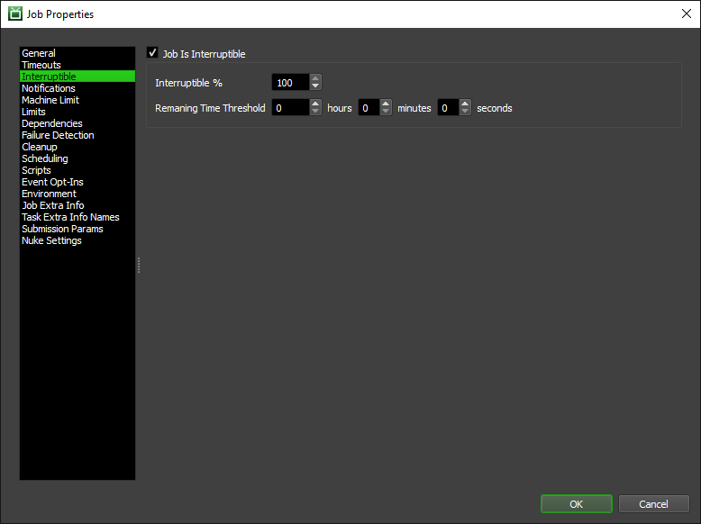The properties are as follows:
Job Is Interruptible: If enabled, tasks for this job can be interrupted during rendering by a job with a higher priority.
Interruptible %: A task for this job will only be interrupted if the task progress is less than or equal to this value.
Remaining Time Threshold %: A task for this job will only be interrupted if the task has more than this amount of time remaining.
Notifications¶
These properties allow you to notify user(s) are jobs complete. There are two list controls beside each other on this panel. The left list contains all the current users on your farm. The right list contains the names of the users of whom will receive notifications. You can move users from one list to another using the arrow controls between the two lists.
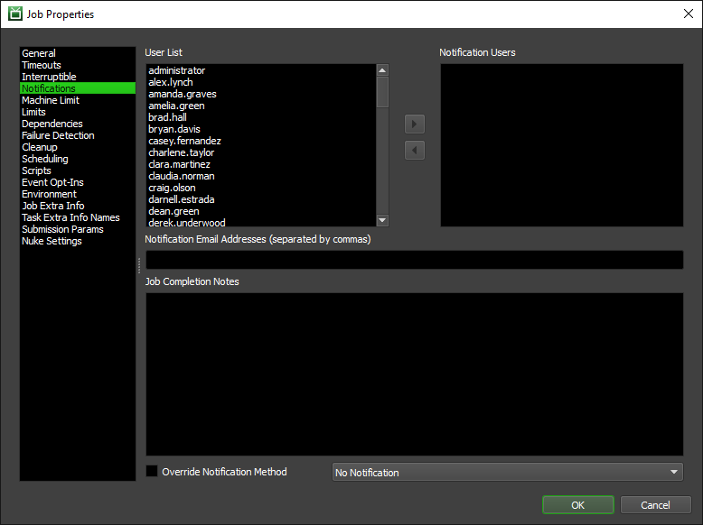The properties are as follows:
Notification Email Addresses: A comma delimited list of the Notification Users email addresses.
Job Completion Notes: Notes to attach in the email sent when the job has completed.
Override Notification Method: If checked, you can select whether to send an email or to not send an email.
Machine Limit¶
A Machine Limit can be used to limit the number of Workers that can render one particular job. This is useful if you want to render a bunch of jobs simultaneously. The list you create can be an allow list or a deny list. An allow list is the list of Workers that are approved to render this job (only these approved machines will render this job) while a deny list contains Workers which will not render this job. To move a machine from one list to another you can use the arrow buttons between the two lists, drag and drop the machine names you want, or simply double click the machine name. You are also able to load and save your machine list from a file so you can use the same list across multiple jobs. The file used will save each machine name to a single line.

You can modify the following options for the machine limit:
Workers that can render this job simultaneously: The number of Workers that can render this job at the same time.
Return Limit Stub When Task Progress % Reaches: If enabled, you can have a Worker release its limit stub when the current task it is rendering reaches the specified progress. Note that not all plugins report task progress, in which case the machine limit stub will not be released until the task finishes rendering.
Workers on Allow List/Deny List: If Workers are on a deny list, they will never try to render this job. If Workers are on an allow list, only those Workers will try to render this job. Note that an empty deny list and an empty allow list are functionally equivalent, and have no impact on which machines the job renders on.
Load Machine List: Open a file dialog to load a list of Workers to be used in the allow list or deny list. One machine name per line in the file (.txt).
Save Machine List: Open a file dialog to save the current allow list or deny list. Each machine name will be written to a single line.
Limits¶
Here you can add or remove the limits that will effect your job. Limits are used to ensure floating licences are used correctly on your farm. To add a limit to your job, you can select the limit(s) you require from from the limit list and press the right arrow between the Limit List and the Required Limits. You are also able to drag and drop your selected limits into or from the required limits or just double click a limit to move it from one list to another. Alternatively, once a limit is created, it can be applied globally to one or more application plugins via the generic options under Configure Plugins.
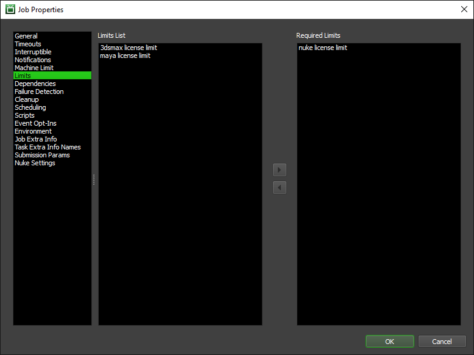Dependencies¶
Dependencies can be used to control when a job should start rendering. See the Job Dependency Options below for more information.
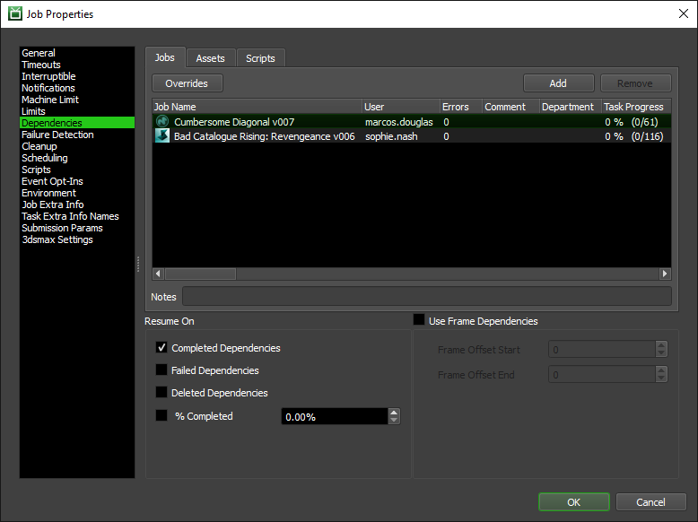Failure Detection¶
Here you can set how your job handles errors and determine when to fail a job.

The properties are a follows:
Override Job Error Limit: Once checked, the job override limit will be set to the user specified value.
Override Task Error Limit: Once checked, the task error limit will be changed to the user specified value.
Send Warning Notification For Job Errors: Whether or not to send a notification to the users specified in the Notification Panel when a job error occurs.
Ignore Bad Worker Error Limit: If checked, a bad Worker error will not count towards job errors.
Clear Bad Worker List: Determines whether or not the bad Worker list should currently be cleared.
Cleanup¶
Here you can override if and how your job is automatically cleaned up when it completes.
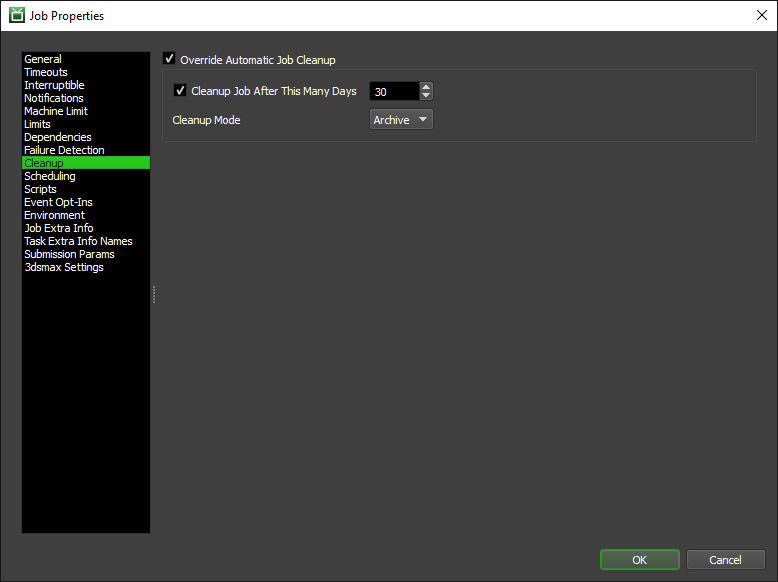The properties are a follows:
Override Automatic Job Cleanup: If enabled, these cleanup settings will be used instead of the ones in the Repository Options.
Cleanup Job After This Many Days: If enabled, this is the number of days to wait after this job has completed before cleaning it up.
Cleanup Mode: Whether the cleanup should archive the job or delete it.
Scheduling¶
You can schedule the job to start and/or stop at a specific date and time, and even repeat on regular intervals. This can be useful for maintenance jobs that need to run every few days or weeks. In addition, you can define a custom schedule so that the jobs can start and/or stop at different times on different days of the week.
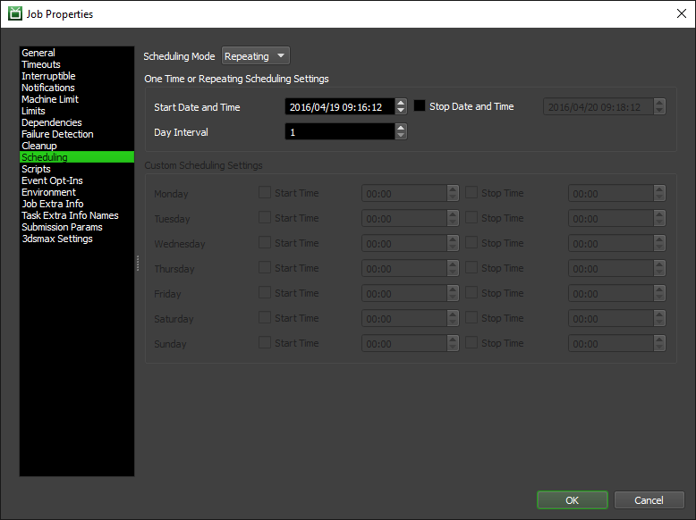Scheduling properties are as follows:
Scheduling Mode: Determines how the job will be scheduled. Possible values are Disabled, One Time, Repeating, or Custom.
- Once or Repeating Scheduling Settings:
Start Date and Time: The date and time this job should start.
Stop Date and Time: If enabled, the date and time this job should be marked as complete if it is still active.
Day Interval: The number of days to wait before repeating this job if the Scheduling Mode is set to Repeating.
Custom Scheduling Settings: Configure the days and times that the job should start and/or stop.
It should be noted that if the job is not put into the Pending state, the job will not wait for the scheduled time to begin rendering. When the scheduling settings change, you will be prompted to put the job in the pending state. This can also be done by right clicking the job and choosing ‘Mark as Pending’.
Scripts¶
You can attach custom Python scripts to your job which can be run before and after your job has rendered. You may also attach Python scripts to your job’s tasks which can be run before and after your job’s tasks render. For more information on creating custom job scripts, see the Job Scripting section of the documentation.
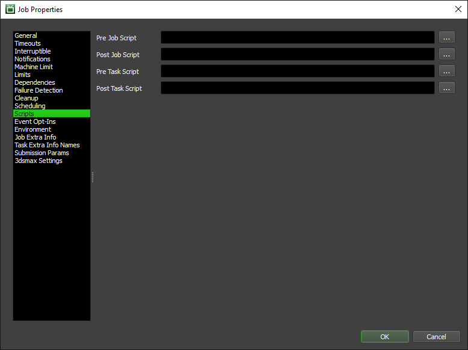You may attach the following Python scripts which will be executed at different times:
Pre Job Script: Executed before a job is run.
Post Job Script: Executed after a job has completed.
Pre Task Script: Executed before a task is started.
Post Task Script: Executed after a task has completed.
For more details on these script properties, see the Job Scripting section of the documentation.
Event Opt-Ins¶
Event Plugins that are in the Opt-In state will only trigger for Jobs and Workers that have Opted into them. You can manage which Event Plugins you want to Opt-In to for a job in this panel. Only Event Plugins in the Opt-In state will be visible to select.

Environment¶
When running a job, you are able to attach environment variables through the Environment tab. The environment variables are specified as key-value pairs and are set on the Worker machine running the job. You are able to specify whether your job specific environment variables will only be set while your job is rendering. All job specific environment variables will be removed when the job has finished running.
You are also able to set a custom plugin directory on this panel. This acts as an alternative directory to load your jobs plugin from. It is useful while creating and testing custom job plugins or when you need 1 or more jobs to specifically use a custom job plugin which is not stored in the Deadline Repository.
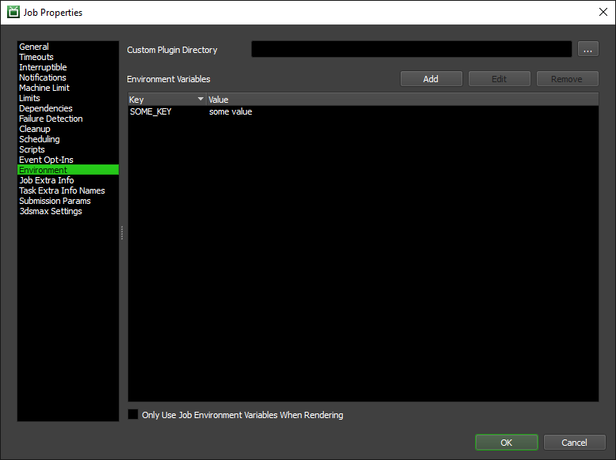The Environment properties are as follows:
Custom Plugin Directory: An alternative directory to load your jobs plugin from.
Environment Variables: A list of environment variables to set while running a job. Stored as a list of key value pairs.
Only Use Job Environment Variables When Rendering: Environment variables for your job will only be set when the job is in the rendering state. Will be removed when the job is finished rendering.
Job Extra Info¶
When a job is submitted, it can have extra information embedded in it. For example, if a studio has an in-house pipeline tool, they may want to embed information in the job that will be used to update the pipeline tool when the job finishes rendering. Alternatively, you may have some custom metadata which you would like to inject, track and possibly display in the Monitor to users. Deadline’s Scripting API can also be used to modify these values.
The Extra Info 0-9 properties can be renamed from the Jobs section of the Repository Options, and have corresponding columns (limited to 10) in the Job list that can be sorted on. The additional key/value pairs in the list at the bottom (unlimited number) do not have corresponding columns, and can be used to contain internal data that doesn’t need to be displayed in the job list.
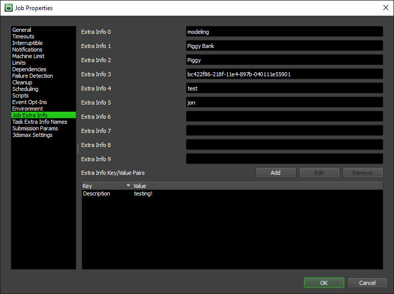Task Extra Info Names¶
The Task Extra Info 0-9 properties can be renamed from the Jobs section of the Repository Options, and have corresponding columns (limited to 10) in the Job list that can be sorted on. Here you can override the names of the Task Extra Info properties for this particular job. This is very useful if you want to inject and track metadata per task, which is specific to a certain job type in your farm. Deadline’s Scripting API can also be used to modify these values.
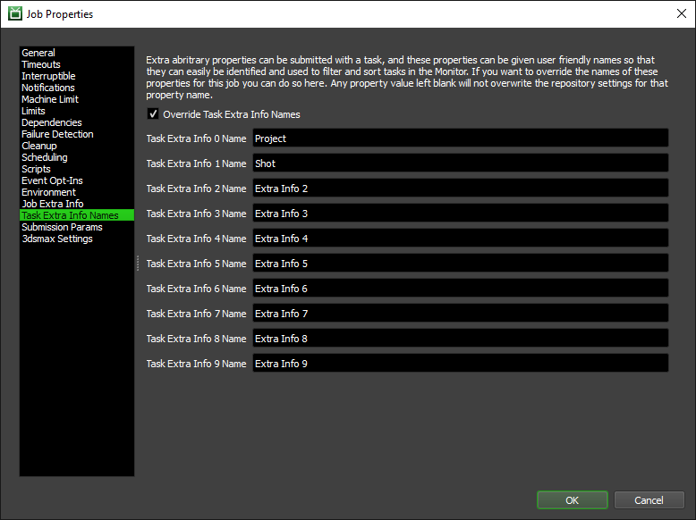Submission Params¶
Here you can view and export the job info and plugin info parameters that were specified when the job was submitted. The exported files can be passed to the the Command application to manually re-submit the job. See the Manual Job Submission documentation for more information.
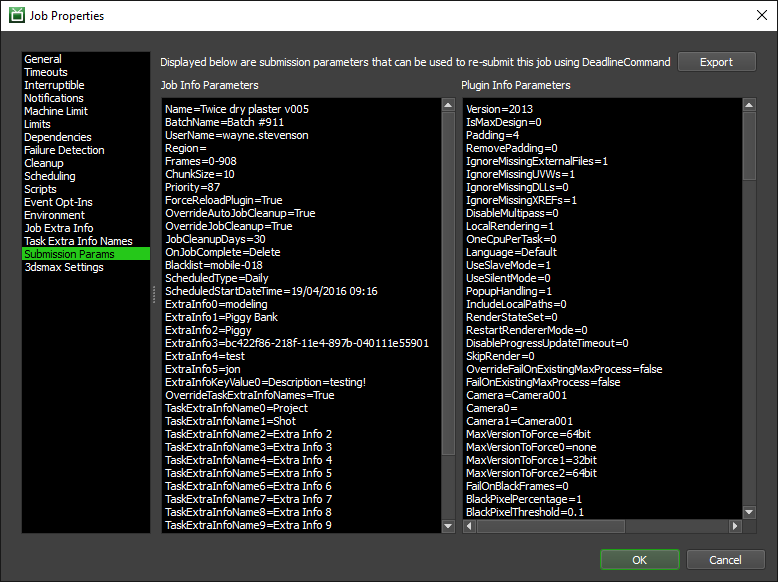Plugin Specific Properties¶
The Plugin specific properties vary between the different plugins, and some plugins may not have a Plugin specific properties tab at all. Note that when modifying properties for multiple jobs at the same time, the Plugin specific tab will only be available if all selected jobs use the same plugin.
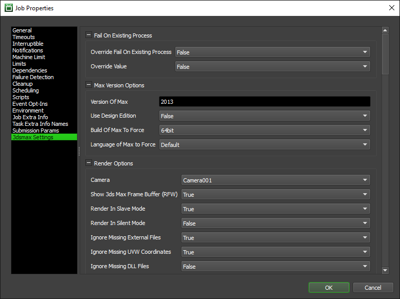To get a description of specific plugin properties, just hover your mouse cursor over them in the properties dialog and a tooltip will pop up with a description.
AWS Portal Properties¶
The AWS Portal settings panel contains job specific settings for when the job is being rendered on an AWS Portal Instance.
The only setting currently available is setting job specific AWS Asset Server file output allow list extensions. The extensions added to the list will be used to determine which files are returned from the AWS Portal Instance when a Task is completed. They follow the same rules as the options in the Configure Asset Server settings
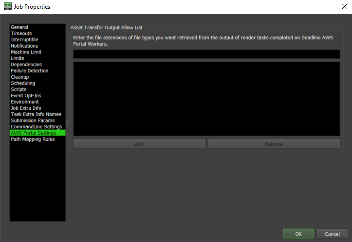Path Mapping Rules¶
The Path Mapping section contains job-specific rules to apply when performing Path Mapping operations in Deadline. For more information on this feature, please refer to the Path Mapping section of the documentation.

Job Dependency Options¶
Dependencies can be used to control when a job should start rendering. There are three types of dependencies available, and one or more can be specified for a job:
Jobs: Job dependencies can be used to start a job when other jobs that it depends on are finished.
Assets: Asset dependencies can be used to start a job when specific files exist on disk.
Scripts: Script dependencies can be used to start a job based on if a Python script returns True or False.
There are a few ways to set up dependencies in the Monitor, which are described below.
Job Properties¶
In the Job tab on the Dependencies page, you have the ability to set which jobs your job is dependent on. By default, the job will only resume when each of its dependencies have completed, but you can also have your job resume when the dependencies have failed, or have been deleted from the queue. Note that you can only set which jobs this job is dependent on, not which jobs are dependent on this job.
Jobs¶
You can also make the job frame dependent, which means that a frame from the job won’t begin rendering until the same frame from the other job(s) is complete. This is useful if you have a job that is dependent on the frames of another job, and you want the two jobs to render concurrently.
Assets¶
In the Asset tab, you can make this job dependent on asset files (textures, particle caches, etc). This job won’t be able to render on a Worker unless it can access all the files listed here. You can also make the job frame dependent with assets. The job’s tasks will not begin to render until the asset with the corresponding frame padding exists.
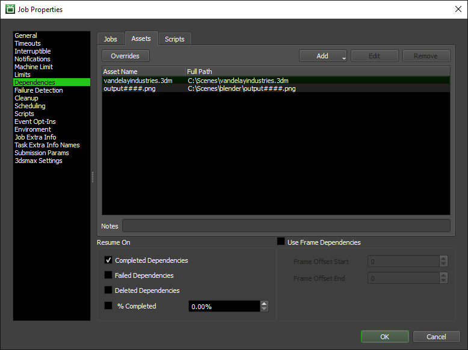Scripts¶
In the Script tab, you can make this job dependent on the results of the specified scripts.
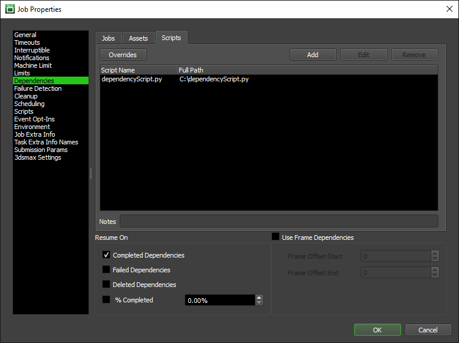The following properties apply to all dependency types:
Resume On Completed Dependencies: This job will resume when its dependencies complete.
Resume On Failed Dependencies: This job will resume when its dependencies fail.
Resume On Deleted dependencies: This job will resume when its dependencies are deleted from the queue.
Resume When Each Dependency is % Complete: This job will resume when each of the jobs this job is dependent on reaches a certain percentage of completion.
Use Frame Dependencies: Specifies that this job is dependent on specific frames from its dependencies. The job will release tasks as the corresponding frames are completed.
Frame Offset Start/End: Use these to offset the frames that this job is dependent on. It can also be used to make frames for this job dependent on multiple frames from other jobs.
You can also specify notes and set overrides for individual dependencies by clicking on them in the dependency list. Click the Overrides button to view the overrides panel.
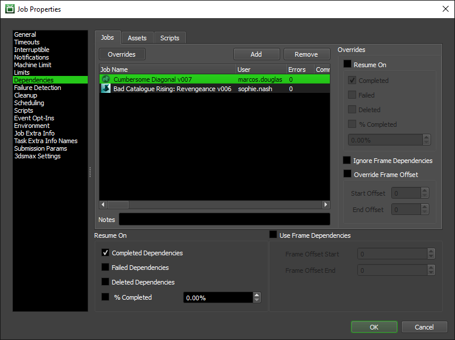Drag and Drop¶
In the Jobs panel, you can drag one or more jobs and drop them on another job. You will then be presented with some choices on how to set the dependencies.
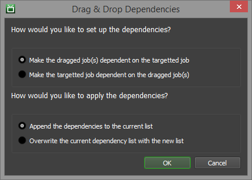Note that drag & drop dependencies will not work if you are holding down a modifier key (SHIFT, CTRL, etc). This is to help avoid accidental drag & drops when selecting multiple jobs in the list.
If you would like to disable drag & drop dependencies, you can do so from the Monitor Options, which can be accessed from the main toolbar. Note that if you change this setting, you will have to restart the Monitor for the changes to take effect.
Dependency View¶
The Job Dependency View is used to be able to visualize and modify your jobs and their dependencies. You can open the Job Dependency View panel from the View menu in the Monitor.

The view will show your currently selected job and all nodes that are linked to it by dependencies. The job node colors indicate the state of the job, while the asset nodes are yellow, the script nodes are purple and the event nodes are green.
Jobs are dependent on everything that has a connection to the Square Socket on their left side. Connections can be made by dragging from the sockets on the nodes (square/circle) to the socket/main body of the other node. Connections can be broken by either dragging the connection off of the node or by selecting the connection and pressing the delete key. Note that changes made in the dependency view do not take effect until saved. If you have made changes and go to close the dependency view, you will be notified that you have unsaved changes.
Additional job nodes can be added to the view by dragging them in from the job list (after locking the dependency first), or through the right click menu. Asset and script nodes can also be added by dragging the file in from your explorer/finder window, or through the right click menu as well. Event nodes can be added through the right click menu. Note that event nodes do not represent a dependency on an event, but rather simply serve to display which events the jobs have opted-into.
Dependencies can be tested by pressing the Test Dependency button in the toolbar. The results are represented by the following colors:
Green: The dependency test has passed.
Red: The dependency test has failed.
Yellow: The job is frame dependent, and the dependency test for some of the frames has passed.
All the available dependency view options can be found across the toolbar at the top of the view, and/or from the view’s right click menu.
Toolbar Options¶
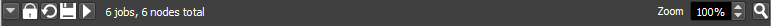Lock View: When enabled, the view will no longer show the currently selected job and will display the last job selected before locking. This is necessary before an additional job can be dragged from the job list into the dependency view.
Reload View: This redraws the dependency view for the selected job. If changes have been made, you will be prompted to save your changes.
Save View: Saves the changes made to the dependency view for the selected job.
Test Dependencies: This allows you to test your dependencies.
Zoom Level: The current zoom level.
Zoom Extents: Zoom the view to the point where all nodes currently in the view are visible.
Job Frame Range¶
To modify the frame range, select the Modify Frame Range option from the Job panel’s right-click menu. Note that modifying these settings will stop and requeue all tasks that are currently rendering.
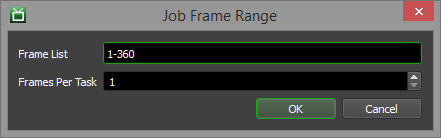See the Frame List Formatting Options documentation for more information on options for formatting frame lists.
Job Render Candidates¶
The Job Render Candidates feature can be used to view which Workers can render a particular job and more importantly, which Workers can’t render a particular job and why. To use this feature, select a single job in the Job panel and right-click and select the ‘Find Render Candidates…’ option. This will bring up the Job Render Candidates window. Note that this feature doesn’t update automatically when a new job is selected. You must use the Refresh button at the bottom of the dialog or open a new Job Render Candidates window.
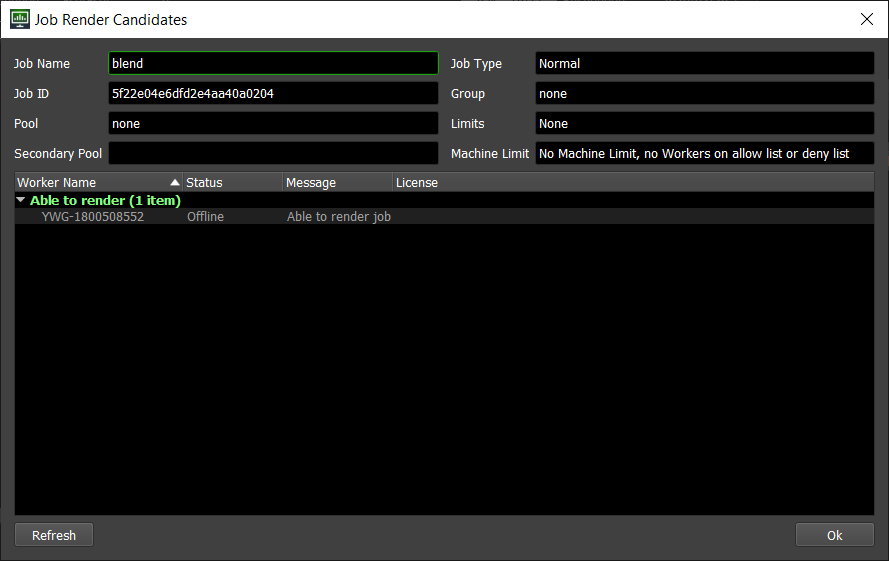The fields at the top of the dialog give you some quick information about the selected job.
Job Name: The name of the selected job.
Job ID: The internal ID of the selected job.
Pool: The Pool that the selected job belongs to.
Secondary Pool: The secondary Pool that the selected job belongs to.
Job Type: If the job is a Normal job or a Maintenance Job. Note that a specific Worker will only render a single task from a Maintenance job, and will not attempt to render any others.
Group: The Group that the selected job belongs to.
Limits: Any Limits that the job requires to render.
Machine Limit: The job’s Machine Limit setting, and this field will show the number of Workers that are on an allow list or a deny list (if there are any).
The list at the bottom of the window has two general groups, ‘Able to render’ and ‘Unable to render’. The Workers in the farm are sorted into these groups depending on their candidacy for the selected job. Note that the coloring of the Worker rows will match their Worker States.
For the Workers that cannot render the job, the message column specifies the first failure point that was encountered. This means you can incrementally improve the capabilities of your Workers using this feature by hitting Refresh after changes have been applied. The order in which the requirements are checked are:
Plugin: Is the plugin required by the selected job enabled in the Repository? If it’s disabled, talk to your administrator about enabling it.
Region: Is the region the Worker is part of enabled? If it’s disabled, talk to your administrator about enabling it.
Pool: Is the Worker in the same Pool or Secondary Pool as the job? If it’s not, you could change the Pool in the job’s properties, or you can talk to your administrator about adding additional Workers to the Pool.
Group: Is the Worker in the same Group as the job? If it’s not, you could change the Group in the job’s properties, or you can talk to your administrator about adding additional Workers to the Group.
Bad Worker: Has the job marked this Worker as bad? If it has, you can remove it from the bad list in the job’s properties.
Worker on an Allow List or a Deny List: Is this Worker on an allow list or deny list in the job’s Machine Limit? This can be changed in the job’s properties if necessary.
Job Dequeuing Settings: Is this Worker configured to dequeue jobs submitted by this job’s user or from their machine? If this is the Worker on your machine, this is set in the Local Worker Controls. Otherwise, talk to your administrator.
Limit: Is the Worker able to obtain the Limits required by this job? Limits are set in the job’s properties.
License: (DEPRECATED) Starting with Deadline 10.1.23, Deadline and its components do not require a license. For older versions, does this Worker have a valid license? If not, talk to your administrator.
Job Reports and History¶
All reports for a job can be viewed in the Job Reports panel. This panel can be opened from the View menu or from the main toolbar in the Monitor. It can also be opened from the Job and Task panel’s right-click menu.

The following reports can be viewed from the Job Report panel:
Render Logs: These are the reports from tasks that rendered successfully.
Render Errors: This are the reports from tasks that failed to render.
Event Logs: These are the reports from Events that were handled successfully.
Event Errors: These are the reports from Events that raised errors.
Requeues: These are reports explaining why tasks were requeued.
You can use the Job Report panel’s right-click menu to save reports as files to send to Deadline Support. You can also delete reports from this menu as well. Finally, if a particular Worker is reporting lots of errors, you can put it on the deny list from this menu (or remove it from the job’s allow list).
In addition to viewing job reports, you can also view the job’s history. The History window can be brought up from the Job panel’s right-click menu by selecting the Job History option.

Job Output¶
Many jobs have the options to explore and view the job’s output directly from the Job or Task panel’s right-click menu. If the options to explore and view the output are available for the job, there will also be the option to copy the output path to the clipboard. This is helpful if you need to paste the path into another application.
Note that the availability of these options is based on how much information about the job’s output could be determined at the time the job was submitted. In some cases, the submitter can’t determine where all or some of the job’s output will be saved to, so these options won’t be available.
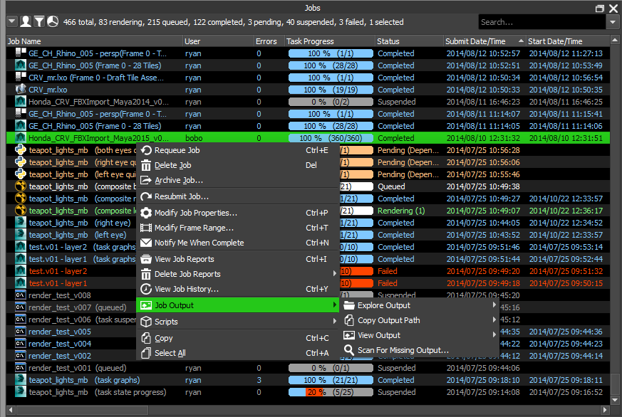When viewing the output for a job, the Monitor will typically open the image file in the default application on the machine. You can configure the Monitor to use specific image viewer applications in the Monitor Options, which can be accessed from the main toolbar.

Finally, some jobs will support the ability to scan completed tasks for a job to see if any output is missing or below an expected file size. The Scan For Missing Output window can be opened by right-clicking on a job and selecting Job Output -> Scan For Missing Output. If any missing output is detected, or the output file is smaller than the Minimum File Size specified, you are given the option to requeue those tasks (simply place a check mark beside the tasks to requeue).
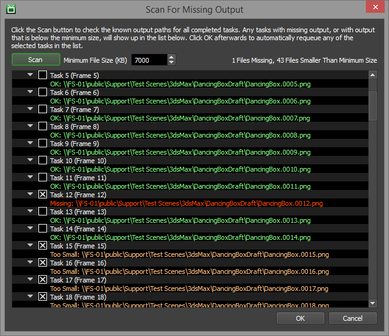Job Auxiliary Files¶
Many jobs have additional files submitted with them, such as the scene file being rendered. These files are copied to the server and are then copied to the Workers when they render the jobs. If a job has auxiliary files submitted with it, you can explore these files from the Job panel’s right-click menu. There will also be the option to copy the auxiliary path to the clipboard, which is helpful if you need to paste the path into another application.
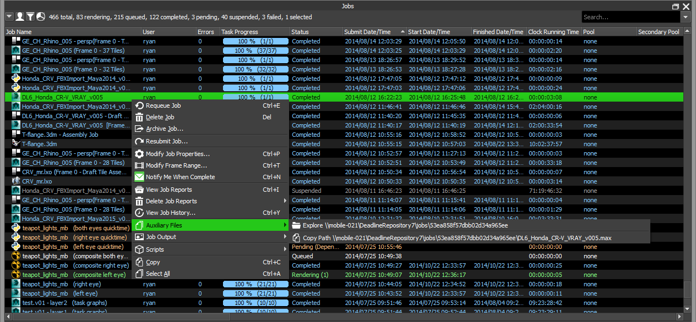
{kind=link}
{kind=link}
{kind=link}
{kind=link}
{kind=link}
{kind=link}
{kind=link}
{kind=link}
{kind=link}
{kind=link}
{kind=link}
{kind=link}
{kind=link}
{kind=link}
{kind=link}
{kind=link}
{kind=link}
{kind=link}
{kind=link}
{kind=link}
{kind=link}
{kind=link}
{kind=link}
{kind=link}
{kind=link}
{kind=link}
{kind=link}
{kind=link}